Chami
Thesis project: A MobileNetV4-Based Ripeness Classification Application for Carabao Mango, Lakatan Banana, and Red Lady Papaya
- Unripe
- Ripe
- Overripe
Chami checks fruit ripeness from a photo. You upload an image or use Live Scan with the camera, and an on-device MobileNetV4 model tells you if the fruit is unripe, ripe, or overripe, with a confidence score. Everything runs offline, so it works without internet.
- Grad-CAM view shows which part of the fruit the model focused on.
- Shelf-life and storage tips come with each result.
- Batches and local orders group saved scans by fruit type and track customer deliveries.
- Guest mode or account, with scan history saved on the device.
- MobileNetV4
- Grad-CAM
- Offline, on-device
- Mobile app
Start as a guest with no account, or sign in to sync. A short walkthrough explains how to scan, read the result, and organize batches.

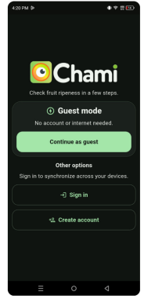
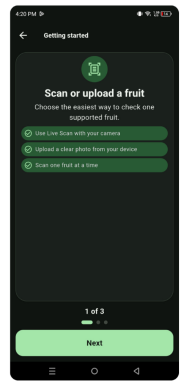
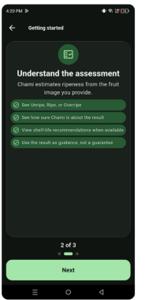
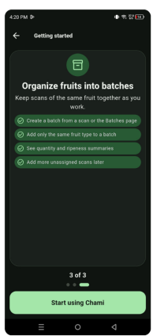

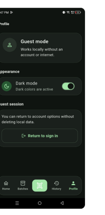
Pick one of three supported fruits, then upload a photo for a thorough check or use Live Scan for a quicker one.


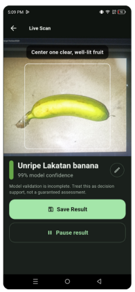
Each result shows the ripeness class, confidence, and a Grad-CAM heatmap. Unclear photos get a clear error with tips for a better shot. Saved scans stay in History.

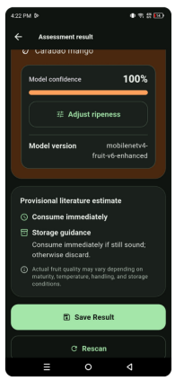
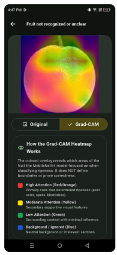

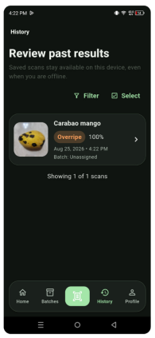
Group scans of one fruit type into a batch, see unripe, ripe, and overripe counts, read storage guidance, and attach a local order with customer details and delivery date.

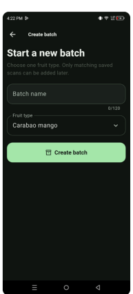


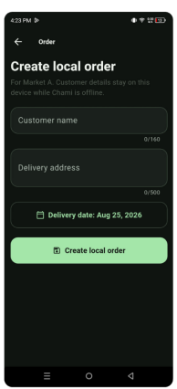